In the court of the Crimson King
In the court of the Crimson King
|
|
|
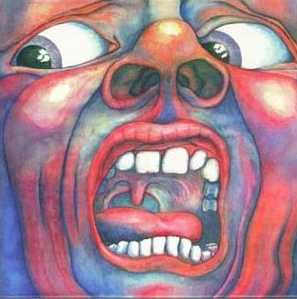 ( En la corte del rey Carmesí) Grabado en 1969 El primer álbum del grupo fue fundacional para el rock progresivo inglés e internacional. La tapa del disco, todo un avance sobre su contenido, se convirtió en símbolo. Letras ácidas, sociales, conjugando pasado, presente y futuro. El tema 21st Century schizoid man, que se convirtió en caballito de batalla de la banda (tiene varias versiones grabadas con distintas formaciones KC), era un rock duro, muy duro para aquella época; un riff bien metal, seguido por los gritos distorsionados y frenéticos que presagiaban el desastre; luego, una potente sección instrumental de fusión jazz-rock. Es el tema que más se relaciona con el dibujo de tapa, tanto lírica como musicalmente; su letra avizora un futuro cercano de grandes males para la humanidad, lo que lamentablemente se fue confirmando en las siguientes décadas. I talk to the wind es una de las baladas más hermosas del rock progresivo. Título, letra y música de Epitaph nos muestran la contradictoria belleza de lo morboso, lo lúgubre, la angustia; su letra se relaciona con el contenido de 21st Century schizoid man, pero en este caso expresada en forma mucho más subjetiva, con trizteza y casi resignación. Moonchild comienza con hermosas y extrañas melodías (resaltando el contenido etéreo e intemporal de la letra), que se continúan con varios minutos de improvisación aleatoria a cargo de Fripp, McDonald y Giles, en un estilo Stockhausen, quien años anteriores había experimentado en ese terreno con el objetivo de darle importancia a los silencios y a cada nota que se tocase, hasta descubrir y alcanzar los momentos de encuentro entre los distintos instrumentos y sus ejecutantes; hacia el final de la improvisación se llega a un clima musicalmente más normal, etéreo y de cuento, como la primera parte cantada; había que ser muy valiente para incluir este experimento en un album debut de un grupo de rock. The court..., una canción épica-sinfónica, es la última joya de este tesoro.
Letras de Sinfield. Música: - temas 1, 3 y 4: Fripp, McDonald, Lake, Giles - temas 2 y 5: McDonald
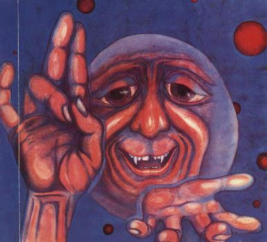 Notas
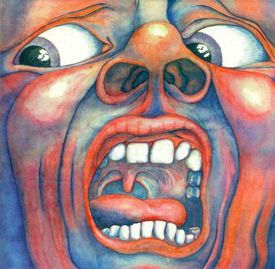 Barry Godber posa con su obra maestra a fines de 1969.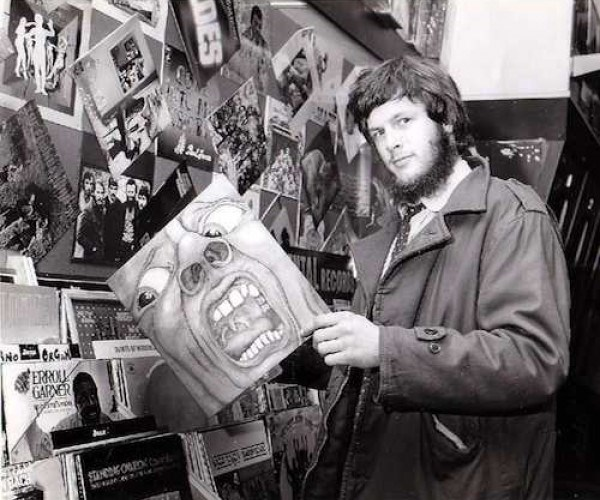 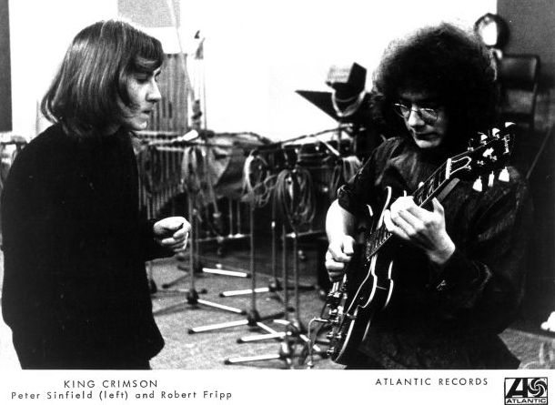 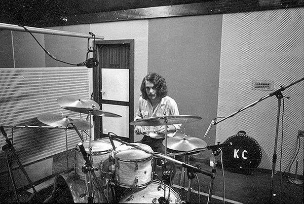 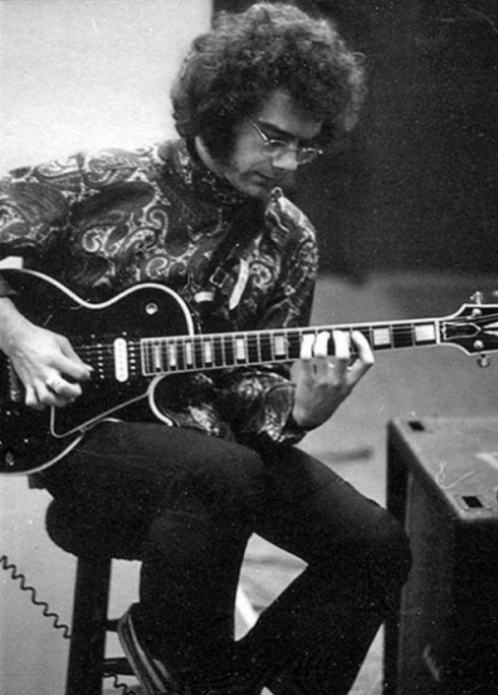 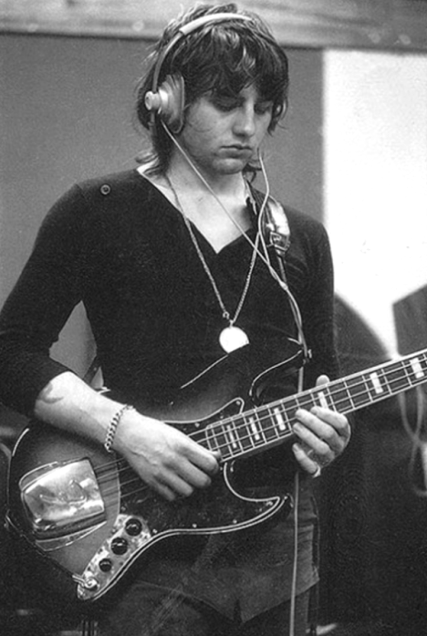
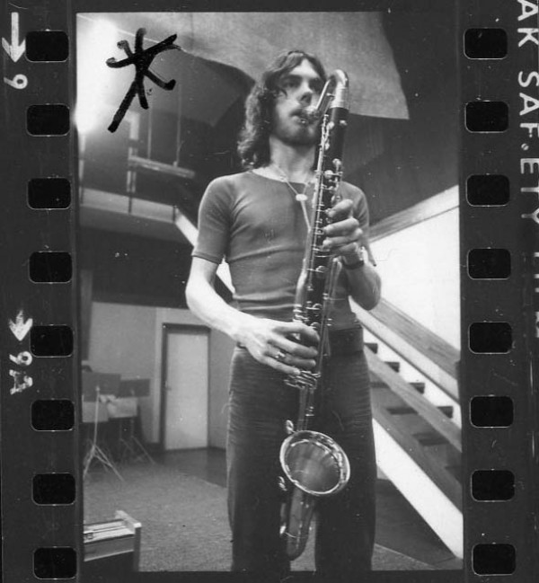 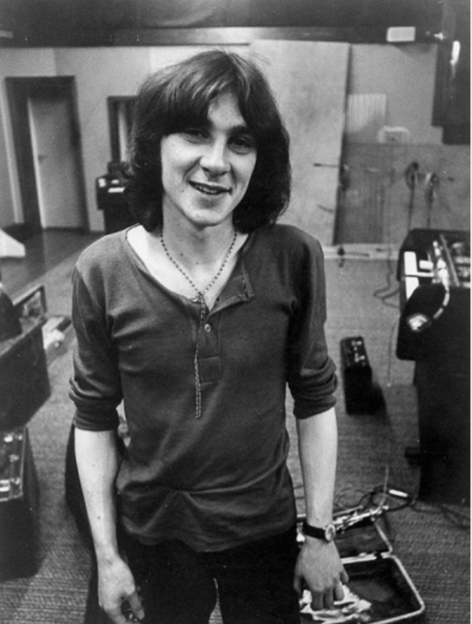 Arriba: en los estudios de grabación. Abajo, el melotron Mk2 (número de serie 13) usado en la grabación del disco. Fripp volvió a usarlo en el album Thrak.
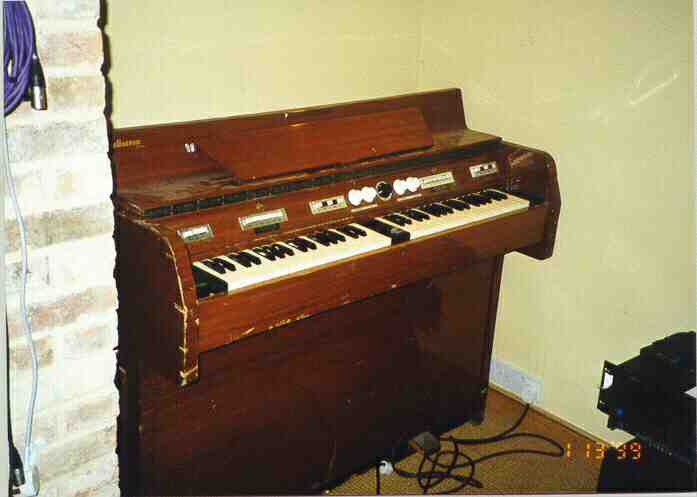
|